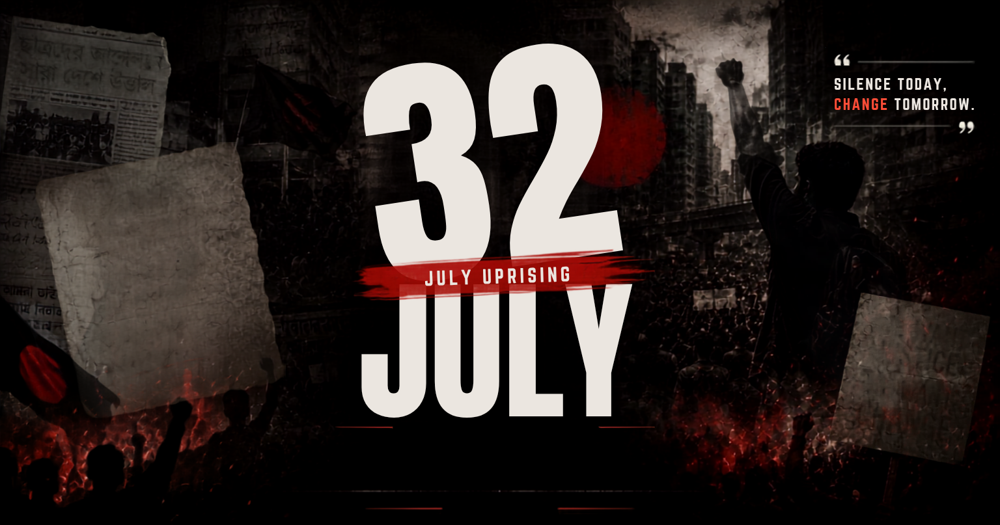

ISTIACK'S JULY CORNER
বাংলায় পড়ুন
বাংলায় পড়ুন
Print Page

Share Link
Download / Print
Select Print Configuration / প্রিন্ট কনফিগারেশন নির্বাচন করুন
Print in English
Outputs the English version of this article
বাংলায় প্রিন্ট করুন
নিবন্ধটির বাংলা সংস্করণ প্রিন্ট করুন
Print Both Languages / উভয়ই প্রিন্ট করুন
Appends both layouts sequentially for paper output
Cancel / বাতিল
Link successfully copied to clipboard.
 ISTIACK'S JULY CORNER
ISTIACK'S JULY CORNER